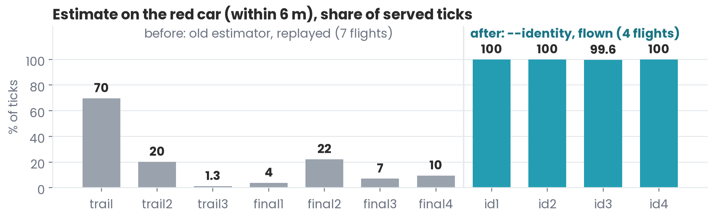
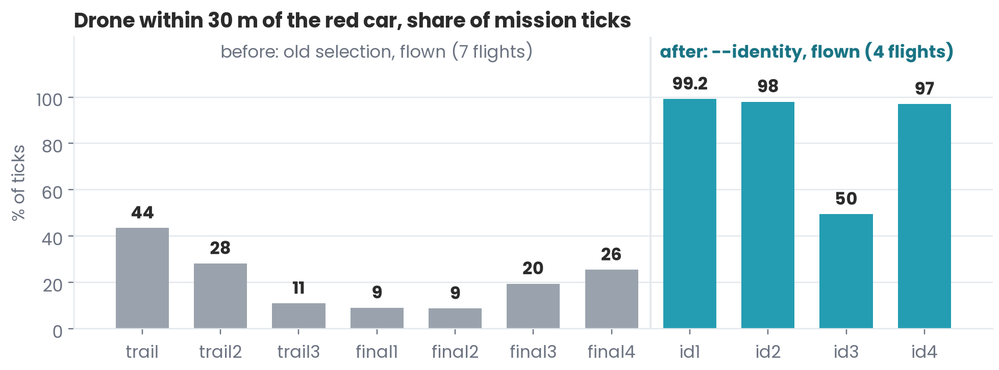
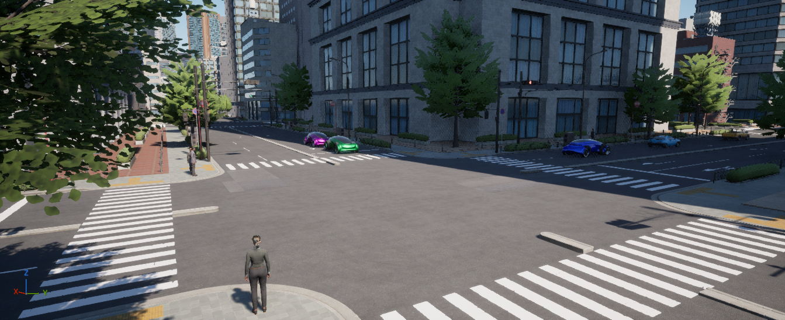
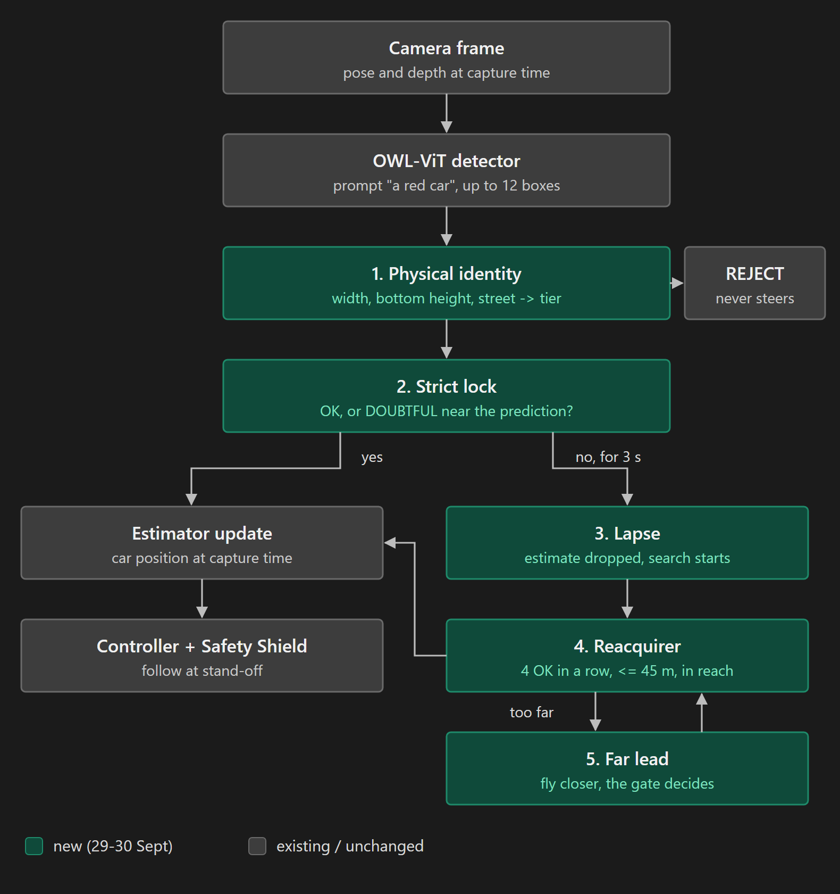

螢幕上的規則
已載入規則檔的每條規則、其限制、即時數值與狀態，最新事件的橫幅，以及標出禁航區的北方朝上地圖。此畫面中，跟隨控制器正自行繞過禁航區。
成果佐證
來自飛行與測試的圖表和影片，各附說明。
已載入規則檔的每條規則、其限制、即時數值與狀態，最新事件的橫幅，以及標出禁航區的北方朝上地圖。此畫面中，跟隨控制器正自行繞過禁航區。
citylife_redcar_nfz_policy_hud.mp4（22.0 MB）尚未放上本網站。在 CityLife 城市中一次 240 s 的飛行，附規則指示面板。無人機從未進入禁航區，並在 98.5 % 的任務時間內與車保持 30 m 以內（同樣 10 m 巡航高度、沒有禁航區的飛行為 98.7 %；使用舊目標選擇的 7 次早期飛行為 8.8-43.6 %）。

同一條航點任務的俯視軌跡。沒有 Shield 時路徑穿越禁航區（在區內 3.7 s）；有 Shield 時，修正後的路徑繞過禁航區（0.0 s）。單一桌機，計畫書的 dev 拓撲。

無人機對紅車位置的估計落在車輛 6 m 以內的 tick 比例。先前 7 次飛行以舊估計器重播：1.3-69.7 %。加入身分辨識層後的 4 次飛行：99.6-100 %。

無人機與紅車距離在 30 m 以內的任務 tick 比例：之前（舊的目標選擇，7 次飛行：8.8-43.6 %）與之後（身分辨識層，4 次飛行：49.5-99.2 %）。
citylife_redcar_identity.mp4（24.7 MB）尚未放上本網站。以目標身分檢查與重新捕獲功能，在城市中跟隨紅車的飛行。
progress_0930_before_after.mp4（7.8 MB）尚未放上本網站。上方是使用舊目標選擇的先前飛行，下方是使用身分辨識層的飛行。

左：跟隨「a yellow car」，安全距離 5 m。右：描述改為「a person」後，安全距離為 10 m。
retarget_smooth.mp4（22.3 MB）尚未放上本網站。操作員把目標描述從車改為人，適用的安全距離規則也隨之改變。

Project AirSim 中的 CityLife 城市：292 個號誌燈頭中有 258 個依固定時制切換，車輛遵守號誌；40 名行人沿路線行走，並在行人綠燈時穿越。

從攝影機畫面到鎖定目標：物理身分、嚴格鎖定、暫失、重新捕獲與遠方線索。